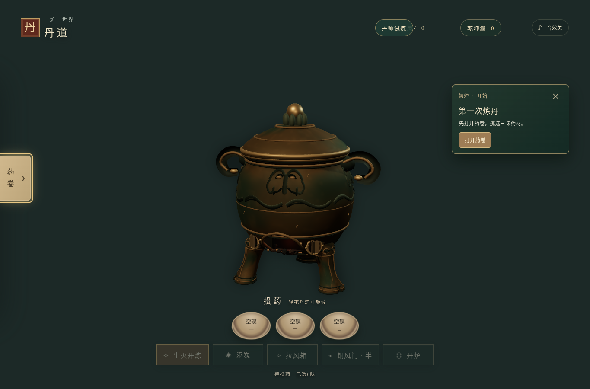
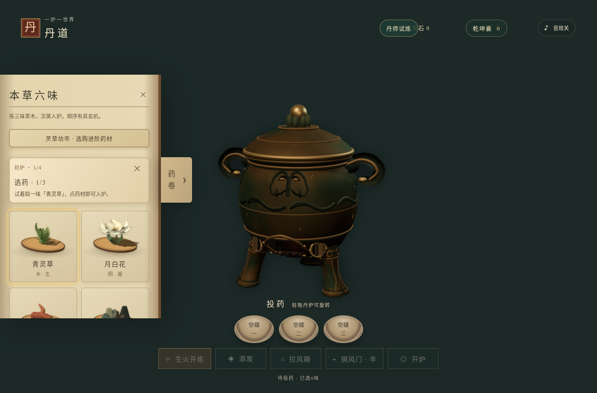
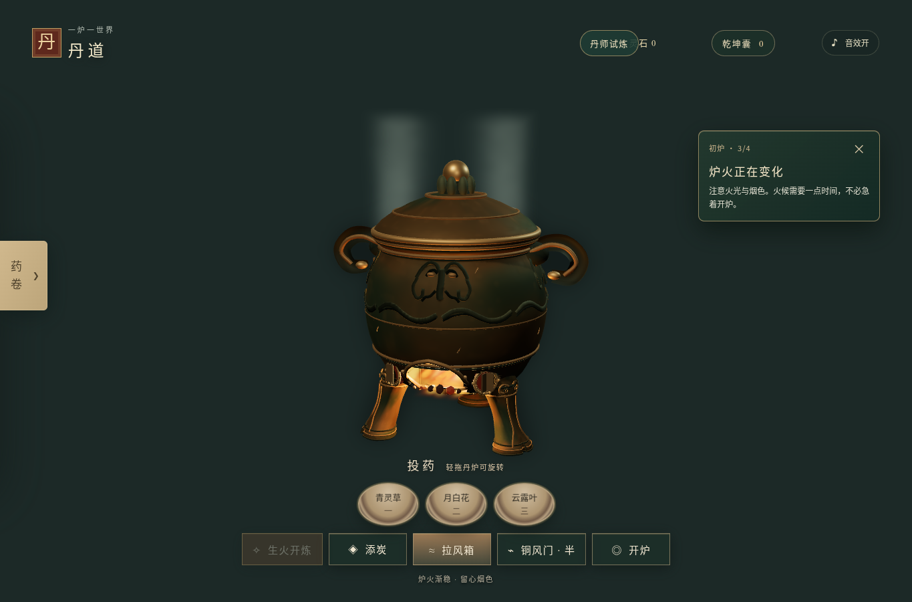
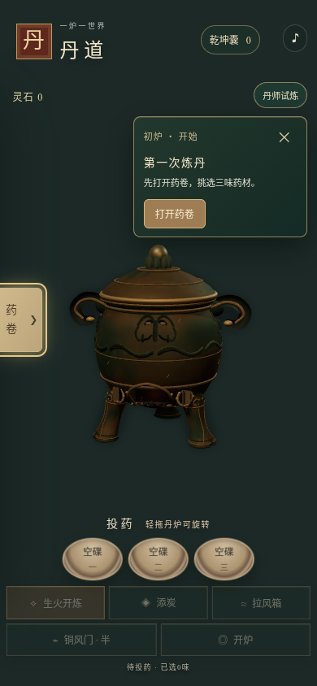
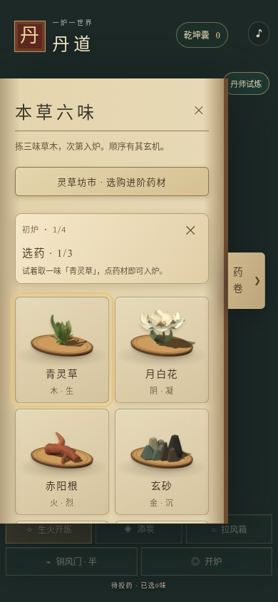

《丹道》P0-02 · 第一次炼丹
以下来自真实 Chrome WebGL2 浏览器的空存档完整流程截图。没有自动投药或伪造丹药。
打开第二项最新试玩 · 对照第一项已通过版本





技术记录：201/201 自动化测试通过；自动化从点击打开药卷到首炉结果约 40.43 秒，不含页面加载，也不等于普通玩家用时。此页供美术与交互验收。
以下来自真实 Chrome WebGL2 浏览器的空存档完整流程截图。没有自动投药或伪造丹药。
打开第二项最新试玩 · 对照第一项已通过版本





技术记录：201/201 自动化测试通过；自动化从点击打开药卷到首炉结果约 40.43 秒，不含页面加载，也不等于普通玩家用时。此页供美术与交互验收。